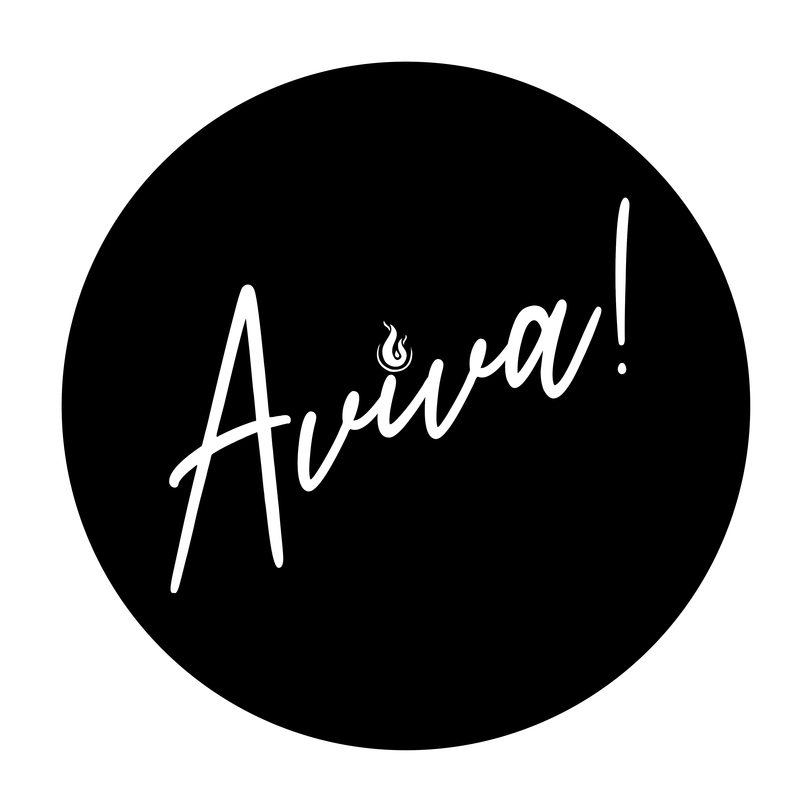

Manual del Equipo de Medios AVIVA
Paso a paso para servir con excelencia.
📘 Manual del Equipo de Medios AVIVA
Este manual ha sido creado con el propósito de capacitar y acompañar a cada nuevo integrante del equipo de medios en Casa Aviva. Nuestra meta es que cada persona que sirva en esta área pueda desempeñar sus funciones con claridad, excelencia y propósito, sin depender exclusivamente del conocimiento del líder actual.
Aquí encontrarás todo lo necesario para realizar el trabajo técnico, creativo y espiritual que demanda esta área: desde cómo operar programas como Holyrics y OBS Studio, hasta guías de fotografía, redes sociales y diseño gráfico. Todo está pensado para ayudarte a crecer, servir mejor y fluir en unidad con el equipo.
🎥 ¿Quiénes somos como equipo de medios?
El equipo de medios no solo opera cámaras o proyectores. Somos una extensión del mensaje. Somos los ojos, los oídos y la imagen de lo que Dios está haciendo. Nos encargamos de que cada persona, dentro y fuera del templo, pueda vivir una experiencia espiritual completa a través de lo visual, lo auditivo y lo digital.
Cubrimos áreas como:
- Proyección de letras y pasajes bíblicos.
- Captura y transmisión de predicaciones en vivo.
- Producción visual con cámaras, luces y diseño.
- Publicación y gestión de contenido en redes sociales.
- Fotografía, video y post-producción para eventos.
❤️ ¿Por qué es tan importante nuestro trabajo?
Cuando hacemos nuestro trabajo con excelencia, estamos quitando distracciones y permitiendo que la presencia de Dios sea lo único en lo que las personas se enfoquen. El medio se vuelve invisible, pero su efecto es eterno.
"Todo lo que hagan, háganlo de corazón, como para el Señor y no para los hombres" – Colosenses 3:23
Este manual es solo una herramienta. Lo más importante siempre será tu corazón dispuesto, tu humildad para aprender, y tu pasión por Dios. Pero si lo aprovechas bien, te permitirá enfocarte menos en el "cómo se hace" y más en el "por qué lo hacemos".
✅ ¿Ya comprendiste esta sección?
🎤 Holyrics – Proyección de letras y Biblia
Holyrics es el programa que usamos en AVIVA para proyectar letras de canciones, versículos y otros elementos visuales durante nuestras reuniones. Aquí te enseñamos cómo usarlo desde cero.
🖥️ Instalación de Holyrics
- Descarga Holyrics desde holyrics.com (puede requerir registro).
- Instálalo siguiendo los pasos del asistente de instalación.
- Abre Holyrics una vez instalado.
🔌 Iniciar Holyrics desde cero
- Encender el computador donde está instalado Holyrics.
- Encender el proyector y conectar el cable HDMI/VGA correspondiente.
- Asegurarse de que el proyector esté como pantalla extendida (no duplicada).
- Abrir Holyrics desde el acceso directo en el escritorio.
🎶 Cómo agregar una canción
- Abre Holyrics y ve a la pestaña "Canciones" o "Library".
- Haz clic en “Nueva canción” o el ícono +.
- Escribe el título de la canción (ej: Enciende una luz).
- Agrega el nombre del autor o ministerio.
- En el cuadro de texto grande, escribe la letra dividida por estrofas:
Verso 1:
Enciende una luz, déjala brillar...
Coro:
Luz que brille en la oscuridad...
- Haz clic en Guardar.
- La canción ahora estará en la lista de canciones y podrás usarla en una presentación.
📖 Cómo proyectar la Biblia
- Haz clic en la pestaña "Biblia" o usa el acceso rápido (dependerá de la versión).
- Selecciona el libro (ej: Juan), capítulo y versículo.
- Haz clic en Mostrar o arrastra al área de presentación.
- El texto aparecerá proyectado inmediatamente en la pantalla.
🧩 Crear una presentación (orden de servicio)
- Haz clic en "Presentación nueva" o "Planning".
- Agrega las canciones haciendo clic derecho y seleccionando “Agregar a presentación”.
- Agrega versículos si es necesario, arrastrándolos o añadiéndolos por botón.
- Ordena los elementos según el orden de la reunión.
- Guarda la presentación con un nombre como "Domingo 7 abril 10AM".
🎛️ Proyección en pantalla
- Conecta el proyector a la computadora (ver sección “Cómo conectar el proyector” más abajo).
- Abre Holyrics y activa el modo de pantalla externa (Display / Output).
- Arrastra el contenido que quieras proyectar a la pantalla de proyección.
- Utiliza el control de “Avance” para cambiar estrofas, versículos o diapositivas.
🧼 Buenas prácticas para Holyrics
- Siempre revisa la letra antes de comenzar el culto (ortografía, estructura, etc).
- No proyectes en blanco. Usa un fondo sobrio o dinámico según el momento.
- No uses letras muy pequeñas ni muy grandes. Tamaño recomendado: entre 35 y 45 pt.
- Evita proyectar versículos muy largos en una sola pantalla. Divídelos si es necesario.
- No uses demasiados efectos visuales (transiciones exageradas o loops sin sentido).
🎨 Personalizar estilo de letra y fondo
- Ve a Configuración > Apariencia o Estilo.
- Cambia la fuente por una legible como Montserrat, Roboto o Lato.
- Usa fondo oscuro y letras claras (o viceversa), según el ambiente.
- Puedes usar imágenes o videos suaves como fondo, pero que no distraigan.
🧠 Consejo: Atajos útiles
- F5 – Proyección completa
- Esc – Salir de la proyección
- Espacio – Siguiente verso
- Flecha arriba/abajo – Navegar entre canciones
📁 Respaldar canciones y presentaciones
Haz una copia periódica de la carpeta de canciones y presentaciones. Esto puede hacerse copiando manualmente la carpeta de usuario o usando la función de exportar en Holyrics si está disponible.
✅ Checklist rápido para cada servicio
- Computadora encendida y conectada al proyector
- Proyector en modo de pantalla extendida
- Holyrics abierto y funcionando
- Canciones cargadas y revisadas
- Versículos preparados si se van a usar
- Presentación creada y guardada
- Fondos y estilos configurados correctamente
- Proyección en pantalla verificada
🎥 Video sugerido: Tutorial Holyrics - Programa Gratuito para proyectar presentaciones
🎥 Video sugerido: TUTORIAL cómo PROYECTAR LETRA DE CANCIONES con HOLYRICS
🎥 OBS Studio – Transmisión en vivo y grabación
OBS Studio es el programa que usamos para capturar, grabar y transmitir en vivo la predicación y otras actividades en Casa Aviva. Junto con Camo Cámara, logramos una excelente calidad de video usando el celular del equipo como cámara profesional.
🛠️ Requisitos básicos
- Computadora con Windows o Mac
- OBS Studio instalado desde obsproject.com
- Celular con buena cámara
- Cable USB o conexión WiFi estable
- Aplicación Camo instalada en el celular
- Software Camo Studio instalado en la computadora
📷 Usar Camo como fuente de video en OBS
- Instala Camo en tu celular (iOS o Android) desde App Store o Play Store.
- Instala Camo Studio en la PC desde reincubate.com/camo.
- Abre la app en el celular y conecta el teléfono a la PC con un cable USB o por WiFi (según configuración).
- En la PC, abre Camo Studio. Debería detectar el celular automáticamente.
- Verás la imagen de la cámara en Camo Studio. Desde allí puedes ajustar:
- Resolución (ej. 720p, 1080p)
- FPS (ideal: 30)
- Exposición, balance de blancos, zoom
- Seleccionar cámara trasera o frontal
- Ahora abre OBS Studio.
- Haz clic en + en "Fuentes" > selecciona “Dispositivo de captura de video”.
- En la lista, selecciona “Camo Camera”.
- ¡Listo! Verás la imagen del pastor capturada desde el celular con excelente calidad.
🎚️ Organización de escenas y fuentes
- Crea una escena llamada “Predicación”.
- Agrega la cámara (Camo), el logo de la iglesia, y texto si deseas.
- Si haces streaming en Facebook/YouTube, ve a Configuración > Transmisión e ingresa la clave de transmisión.
💡 Tips técnicos
- Siempre limpia la lente del celular antes de comenzar.
- Coloca el celular en un trípode bien estable.
- Desactiva las notificaciones del celular o ponlo en modo avión con WiFi activado.
- Verifica que Camo esté bien conectado antes de abrir OBS para evitar conflictos.
- En OBS, puedes usar "Filtros" para agregar mejoras a la imagen (como brillo o recorte).
📁 Grabación de la predicación
- En OBS, ve a Configuración > Salida > Grabación.
- Selecciona la carpeta donde se guardarán los videos.
- Usa el botón Iniciar grabación cuando comience la predicación.
- Finaliza con Detener grabación al terminar.
🌐 Transmisión en vivo (streaming)
- Obtén la clave de transmisión de Facebook o YouTube.
- En OBS, ve a Configuración > Transmisión e ingrésala.
- Haz clic en Iniciar transmisión.
🧼 Buenas prácticas OBS + Camo
- No uses la cámara frontal a menos que sea de buena calidad.
- Mantén el celular cargado o con batería suficiente.
- Evita colocar el celular donde haya demasiada luz directa detrás del pastor (evita siluetas).
- Verifica que no esté activado el enfoque automático si distrae. Ajusta manual si es posible.
- Prueba 15 minutos antes del servicio.
✅ Checklist rápido para grabación con OBS Studio
- Computadora encendida y funcionando correctamente
- OBS Studio abierto y actualizado a la última versión
- Fuentes de video y audio configuradas y reconocidas por OBS
- Escenas y fuentes organizadas según las necesidades de la grabación
- Configuración de salida ajustada para una grabación de alta calidad
- Espacio suficiente en el disco duro para almacenar la grabación
- Prueba de grabación realizada para verificar que todo funcione correctamente
🎥 Video sugerido: Cómo usar OBS para Grabación de Pantalla o Streaming
🎥 Video sugerido: Cómo GRABAR la PANTALLA de tu PC con OBS Rápido y GRATIS
🎥 Video
La grabación de video es una parte clave de nuestro trabajo. Nos permite compartir los mensajes, ministraciones y momentos especiales con quienes no pudieron asistir presencialmente. Aquí te explicamos cómo hacerlo correctamente.
📦 1. ¿Qué se necesita para grabar?
- Trípode: estable y bien ubicado, evita el movimiento manual.
- Celular o cámara: debe estar con batería al 100%, memoria disponible y buena calidad de imagen.
- Camo Cam: app para usar el celular como cámara profesional (si se usa con OBS Studio).
- OBS Studio: programa que se usa para grabar o transmitir en vivo.
📌 2. ¿Qué se debe grabar?
- Inicio del culto (ambiente general).
- Momentos de alabanza y adoración (cambios de plano, enfoque en cantantes y músicos).
- Predicación completa (plano fijo con leves movimientos si se requiere).
- Momentos especiales: testimonios, oraciones, avisos.
🎬 3. Tips para una buena grabación
- Ubica el trípode en un punto alto o centrado para evitar que alguien se cruce frente a la cámara.
- Activa el enfoque automático y el brillo adecuado en la cámara.
- Evita el zoom digital, ya que reduce la calidad del video.
- Graba en horizontal para contenido de YouTube o pantalla completa.
- Verifica el audio antes de comenzar. Asegúrate que el micrófono integrado o externo funciona.
🎚️ 4. Audio del video
- Revisar si OBS está capturando el audio correcto (entrada de micrófono o línea).
- Evitar saturación del volumen. Haz pruebas de sonido antes de grabar.
- Si se graba desde el celular, evitar estar muy lejos o muy cerca del parlante principal.
🧠 5. Planos recomendados
- Plano medio: de la cintura hacia arriba del pastor o vocalista.
- Plano general: para mostrar todo el altar o la congregación.
- Plano detalle: manos levantadas, instrumentos, rostros.
🧩 6. Edición y respaldo
- Guardar todos los videos en la carpeta de Google Drive del equipo.
- Etiquetar con fecha y nombre del culto (Ej:
2025-04-05_Predicacion_Ruby.mp4). - Editar en apps como CapCut, DaVinci Resolve o Premiere si es necesario cortar o mejorar color/audio.
🚨 7. Errores comunes a evitar
- Grabaciones movidas o torcidas (usa siempre trípode).
- No capturar el audio correctamente.
- Grabar solo una parte del culto y olvidar lo demás.
- Grabar sin verificar el espacio de almacenamiento.
✅ Checklist antes de grabar
- ☐ Trípode firme y bien ubicado
- ☐ Cámara/celular con batería y espacio
- ☐ Audio probado
- ☐ OBS listo si se va a grabar desde allí
- ☐ Plano ajustado correctamente
📱 Camo Cámara – Transforma tu celular en una cámara profesional
Camo es una aplicación que te permite usar la cámara de tu celular como cámara web en tu computadora. Es ideal para transmisiones en OBS porque ofrece mejor calidad que la webcam promedio.
🔧 ¿Por qué usar Camo?
- Los celulares actuales tienen cámaras mucho mejores que las webcams estándar.
- Permite usar zoom óptico, control de luz, enfoque, etc.
- No requiere tarjeta de captura si usas el celular como cámara directa.
🚀 Instalación de Camo
- En tu celular, descarga Camo desde Play Store o App Store.
- En la computadora, descarga Camo Studio desde reincubate.com/camo.
- Instala ambos programas y conéctalos mediante cable USB o WiFi.
- Abre la app móvil primero, luego Camo Studio en la computadora.
🎛️ Controles disponibles en Camo Studio
- Enfoque automático o manual
- Zoom digital o óptico
- Brillo, saturación, exposición
- Resolución: 720p, 1080p, 4K (depende del plan)
- FPS: 24, 30, 60
🎥 Integración con otros programas
- OBS Studio
- Zoom
- Google Meet
- Teams
🛎️ Consejos para el equipo
- Mantener la cámara limpia
- Usar trípode firme
- Controlar iluminación con luces de fondo adecuadas
- Evitar vibraciones
📸 Fotografía
La fotografía en el equipo de medios no se trata solo de capturar momentos, sino de comunicar emociones, destacar la presencia de Dios y transmitir lo que se vive en la iglesia. Aquí te enseñamos cómo lograrlo con calidad y propósito.
📷 1. ¿Qué cámara usamos?
- Puede usarse un celular con buena cámara (mínimo 12 MP).
- También se puede usar una cámara réflex o semiprofesional si se dispone de una.
- Usar siempre el lente limpio y sin zoom digital (acércate físicamente).
🧍♂️ 2. Qué tipo de fotos tomar
- Alabanza y adoración: personas con manos levantadas, músicos, vocalistas.
- Predicación: enfoque al rostro del pastor, con expresión o movimiento.
- Congregación: tomas amplias del auditorio, mejor si hay participación visible.
- Backstage y voluntariado: momentos espontáneos de quienes sirven (sonriendo, preparando, en acción).
- Momentos especiales: bautismos, oraciones, visitas especiales, etc.
🎯 3. Consejos para lograr buenas fotos
- Usa el modo retrato en celular para enfocar bien rostros y desenfocar el fondo.
- Evita el uso de flash a menos que sea muy necesario. Aprovecha la luz ambiental.
- Toma fotos horizontales para Facebook/YouTube y verticales para historias de Instagram/TikTok.
- Cuida el encuadre: evita cortar cabezas o pies, y deja espacio donde se dirige la mirada del sujeto.
- No tomes fotos borrosas: si te tiembla la mano, usa apoyo o toma varias para elegir la mejor.
🎨 4. Estilo visual
- Mantén una línea cálida o natural (no exagerar filtros).
- Resalta emociones: sonrisas, manos levantadas, ojos cerrados en adoración.
- Si editas, usa herramientas como Lightroom (móvil) o Snapseed para mejorar brillo, contraste y color.
⚠️ 5. Lo que debemos evitar
- Fotos desenfocadas o oscuras.
- Tomar fotos en momentos íntimos sin permiso (como llanto, oración privada).
- Capturar a personas distraídas o con gestos incómodos.
- Tomar muchas fotos sin intención o sin sentido estético.
📂 6. ¿Qué se hace con las fotos?
- Se suben al drive del equipo con fecha y evento.
- Se seleccionan las mejores para redes sociales (máximo 10 por evento).
- Se usan en diseños para historias, reels y publicaciones.
- Algunas se guardan para presentaciones mensuales o de fin de año.
✅ Check rápido antes de terminar la jornada
- ¿Capturé emociones reales?
- ¿Hay variedad de planos?
- ¿Representa lo que pasó en el culto?
- ¿Tengo 5 a 10 fotos buenas para redes?
💡 Iluminación
Una buena iluminación marca la diferencia en el ambiente del culto y en la calidad del video. Usamos 3 luces de fondo para crear armonía visual y enfatizar el altar.
🎯 1. Propósito de las luces
- Crear ambiente: Aporta belleza, calidez y profesionalismo al altar.
- Enfocar la atención: Dirige la vista hacia el predicador o el centro del mensaje.
- Mejorar el video: Resalta el fondo y da profundidad a la imagen.
📌 2. Ubicación recomendada
- Luz izquierda: apuntando en ángulo al fondo izquierdo del altar.
- Luz derecha: en espejo, iluminando el fondo derecho.
- Luz central: puede estar dirigida directamente hacia el centro del fondo o al techo para crear un rebote suave.
🎨 3. Tonalidades y armonía
Es importante mantener una paleta coherente con el estilo visual de la iglesia:
- Colores suaves: como azul cielo, violeta claro o rosa tenue, generan paz y adoración.
- Colores cálidos: como naranja, ámbar o dorado, generan cercanía y alegría.
- Evita mezclar colores fríos y cálidos extremos a la vez (ej. rojo con azul intenso), ya que puede resultar visualmente agresivo.
- Usa un solo color dominante y puedes complementar con otro color suave o luz blanca.
🛠️ 4. Cómo configurar las luces
- Encender todas las luces 10 minutos antes del culto.
- Verificar que no apunten directamente a los ojos del pastor.
- Probar los colores desde el celular o el panel de control (según el tipo de luces que tengan).
- Ajustar la intensidad para evitar que el fondo se vea quemado o demasiado oscuro.
📷 5. ¿Cómo saber si se ve bien?
- Verifica en la cámara principal (Camo Cam) cómo se ve la iluminación en OBS.
- Debe notarse una atmósfera limpia, sin sombras duras o colores que distraigan.
- Pide una segunda opinión desde el salón si es necesario.
✅ Checklist de luces
- ☐ Luces conectadas y encendidas
- ☐ Tonalidades suaves y armoniosas
- ☐ Intensidad equilibrada
- ☐ Verificado desde cámara/OBS
🎨 Diseño Gráfico y Uso de Colores
Una buena presentación visual comunica orden, excelencia y profesionalismo. En el equipo de medios de Aviva buscamos que cada imagen, proyección y contenido refleje la belleza de lo que Dios está haciendo en la iglesia.
🎯 Identidad Visual
- Colores principales:
- Negro carbón (#1e1e1e): elegancia, contraste.
- Blanco puro (#ffffff): limpieza, claridad.
- Amarillo dorado (#f7c948): energía, llamado a la acción.
- Rojo pasión (#e63946): énfasis emocional (usar con moderación).
- Tipografías recomendadas:
- Encabezados: Montserrat, Bebas Neue, Oswald.
- Cuerpo de texto: Open Sans, Roboto, Lato.
- Evita usar más de 2 tipos de letra por proyecto.
🖼️ Composición de Imágenes y Slides
- Deja márgenes adecuados (mínimo 40px en los bordes).
- Usa imágenes de alta calidad (mínimo 1080px de ancho).
- Evita saturar con texto. Usa frases cortas y poderosas.
- Mantén coherencia visual: si usas líneas redondeadas, que todo lo demás también tenga esa suavidad.
- Agrega el logo de la iglesia solo cuando sea relevante (sin forzarlo).
📸 Proyecciones y Letra en Culto
- Color de fondo: oscuro (negro o azul marino).
- Letra: blanca o amarilla clara (#f7f7f7 o #fff5b0).
- Fuente recomendada: Arial Rounded, Montserrat Bold.
- Tamaño mínimo: 36px para ser legible desde el fondo del salón.
- Evita fondos con demasiados elementos o animaciones que distraigan.
📱 Redes Sociales
- Aplica los colores institucionales para generar una imagen de marca reconocible.
- Los reels pueden tener tipografía llamativa, pero debe mantenerse el estilo limpio.
- Para historias, usa bloques de color sólido como fondo de texto cuando sea necesario.
- No uses emojis en exceso (máximo 2 o 3 por diseño).
💡 Tips de Diseño Rápido (especial para Canva)
- Usa plantillas que tengan espacio negativo (respiran).
- Mantén alineaciones centrales o izquierda – evita textos flotantes sin guía visual.
- Combina una letra gruesa con una delgada para jerarquía visual.
- Usa sombras suaves para destacar texto si hay fondo con imagen.
- Guarda y reutiliza los colores de marca en tu kit de marca de Canva.